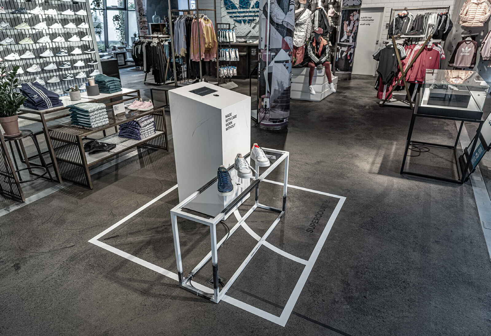
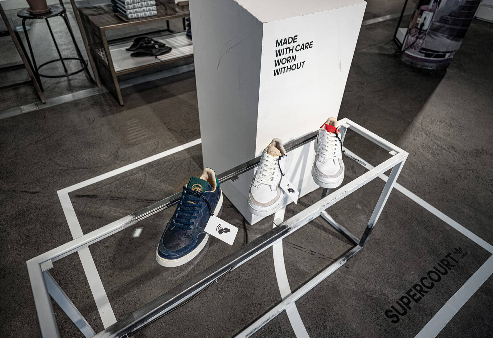
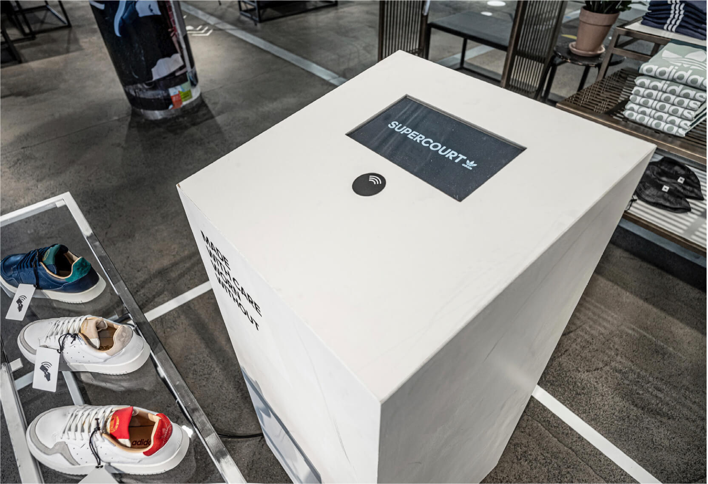

08/19 | physical | digital | tech
I was tasked to create a physical / digital interface for the adidas flagship store here in Berlin.
Using arduino and processing, I built a swipe able surface which allowed select shoes to be swiped and video content to be shown on the display.
This experience offered the customer to directly interact with the shoe that was being promoted. The shoes became part of the interface.
There has been different iterations to the podium. Using various media and interactive objects. The hardware and software can and has been adjusted from the original concept.
Checkout some of the build and prototyping of the podium on instagram.